Nonlinear 3 DOF vehicle model
Modelo bicicleta não linear com 3 graus de liberdade.
Contents
Sintax
dx = VehicleModel.Model(~,estados)
Arguments
The following table describes the input arguments:
| estados | Estados do modelo: [dPSI ALPHAT PSI XT YT VEL] |
Description
O centro de massa do veículo é dado pelo ponto  e os eixos dianteiro e traseiro são dados pelos pontos 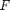 e 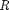, respectivamente. A constante mede a distância do ponto ao e a distância do ponto ao . Os ângulos 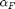 e 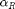 são os ângulos de deriva nos eixos dianteiro e traseiro. 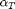 is the vehicle side slip angle and 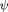 is the vehicle yaw angle. Por fim, 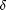 é o ângulo de esterçamento.
e os eixos dianteiro e traseiro são dados pelos pontos 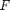 e 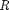, respectivamente. A constante mede a distância do ponto ao e a distância do ponto ao . Os ângulos 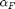 e 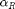 são os ângulos de deriva nos eixos dianteiro e traseiro. 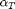 is the vehicle side slip angle and 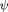 is the vehicle yaw angle. Por fim, 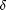 é o ângulo de esterçamento.
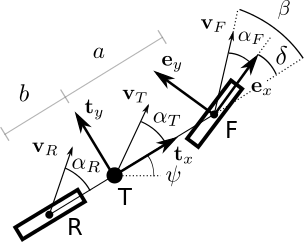
Code
classdef VeiculoSimplesNaoLinear3GDL < DinamicaVeicular.VeiculoSimples
methods
% Constructor function self = VeiculoSimplesNaoLinear3GDL(varargin) if nargin == 0 % Entrada padrão dos dados do veículo mF0 = 5237; % Massa no eixo dianteiro [kg] mR0 = 2440; % Massa no eixo traseiro [kg] IT = 46100; % Momento de inércia [kg*m2] DELTA = 0; % Esterçamento do eixo dianteiro [rad] lT = 3.550; % Distância entre os eixos [m] nF = 2; % Número de pneus no eixo dianteiro nR = 2; % Número de pneus no eixo traseiro largT = 2; % Largura do veículo[m] muy = 0.3; % Coeficiente de atrito de operação entradaVetor = [mF0 mR0 IT DELTA lT nF nR largT muy]; % Definindo os parâmetros da classe self.params = self.conversao(entradaVetor); self.pneu = DinamicaVeicular.PneuPacejka; else self.params = self.conversao(varargin{1}); self.pneu = varargin{2}; end self.distFT = self.params(11); self.distTR = self.params(12); self.largura = self.params(8); end
Model
Função com as equações de estado do modelo
function dx = Model(self,~,estados) % Dados do veículo m = self.params(10); % massa do veiculo [kg] I = self.params(3); % momento de inercia [kg] a = self.params(11); % distancia do eixo dianteiro ao centro de massa [m] b = self.params(12); % distancia do eixo dianteiro ao centro de massa [m] nF = self.params(6); % Número de pneus no eixo dianteiro do caminhão-trator nR = self.params(7); % Número de pneus no eixo traseiro do caminhão-trator muy = self.params(9); % Coeficiente de atrito de operação DELTA = self.params(4); g = 9.81; % Aceleração da gravidade [m/s^2] FzF = self.params(1)*g; % Carga vertical no eixo dianteiro [N] FzR = self.params(2)*g; % Carga vertical no eixo traseiro [N] % Estados dPSI = estados(1); ALPHAT = estados(2); v = estados(6); PSI = estados(3); % Angulos de deriva não linear ALPHAF = atan2((v*sin(ALPHAT) + a*dPSI),(v*cos(ALPHAT))) - DELTA; % Dianteiro ALPHAR = atan2((v*sin(ALPHAT) - b*dPSI),(v*cos(ALPHAT))); % Traseiro % Forças longitudinais FxF = 0; FxR = 0; % Curva característica FyF = nF*self.pneu.Characteristic(ALPHAF,FzF/nF,muy); FyR = nR*self.pneu.Characteristic(ALPHAR,FzR/nR,muy); % Equações de estado dx(1,1) = (FyF*a*cos(DELTA) - FyR*b + FxF*a*sin(DELTA))/I; dx(2,1) = (FyR + FyF*cos(DELTA) + FxF*sin(DELTA) - m*(dPSI*v*cos(ALPHAT) + (sin(ALPHAT)*(FxR + FxF*cos(DELTA) - FyF*sin(DELTA) +... dPSI*m*v*sin(ALPHAT)))/(m*cos(ALPHAT))))/(m*(v*cos(ALPHAT) + (v*sin(ALPHAT)^2)/cos(ALPHAT))); dx(6,1) = (FxR*cos(ALPHAT) + FyR*sin(ALPHAT) - FyF*cos(ALPHAT)*sin(DELTA) + FyF*cos(DELTA)*sin(ALPHAT) + ... FxF*sin(ALPHAT)*sin(DELTA) + FxF*cos(ALPHAT)*cos(DELTA))/(m*cos(ALPHAT)^2 + m*sin(ALPHAT)^2); % Obtenção da orientação dx(3,1) = dPSI; % dPSI % Equações adicionais para o posicionamento (Não necessárias para a dinâmica em guinada) dx(4,1) = v*cos(ALPHAT + PSI); % X dx(5,1) = v*sin(ALPHAT + PSI); % Y end
end
methods (Static)
conversao
A função conversao adiciona no vetor de entrada ([mF0 mR0 IT DELTA lT nF nR largT muy]) os parâmetros restantes do modelo de veículo ([mT a b]).
function parametros = conversao(entrada) mF0 = entrada(1); % Massa no eixo dianteiro [kg] mR0 = entrada(2); % Massa no eixo traseiro [kg] lT = entrada(5); % Distância entre os eixos [m] % Conversão dos dados para os parâmetros usados na equação de movimento mT = mF0 + mR0; % massa do veículo [kg] a = mR0/mT*lT; % Distância (F-T) [m] b = lT - a; % Distância (R-T) [m] % Saída parametros = [entrada mT a b]; end
end
Properties
properties
params
pneu
distFT
distTR
largura
end
end